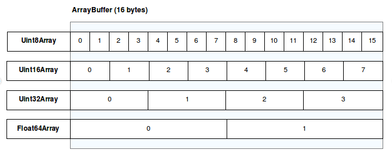

JavaScript typed arrays
JavaScript typed arrays are array-like objects that provide a mechanism for reading and writing raw binary data in memory buffers.
Typed arrays are not intended to replace arrays for any kind of functionality. Instead, they provide developers with a familiar interface for manipulating binary data. This is useful when interacting with platform features, such as audio and video manipulation, access to raw data using WebSockets, and so forth. Each entry in a JavaScript typed array is a raw binary value in one of a number of supported formats, from 8-bit integers to 64-bit floating-point numbers.
Typed array objects share many of the same methods as arrays with similar semantics. However, typed arrays are not to be confused with normal arrays, as calling Array.isArray() on a typed array returns false. Moreover, not all methods available for normal arrays are supported by typed arrays (e.g., push and pop).
To achieve maximum flexibility and efficiency, JavaScript typed arrays split the implementation into buffers and views. A buffer is an object representing a chunk of data; it has no format to speak of, and offers no mechanism for accessing its contents. In order to access the memory contained in a buffer, you need to use a view. A view provides a context — that is, a data type, starting offset, and number of elements.

Buffers
There are two types of buffers: ArrayBuffer and SharedArrayBuffer. Both are low-level representations of a memory span. They have "array" in their names, but they don't have much to do with arrays — you cannot read or write to them directly. Instead, buffers are generic objects that just contain raw data. In order to access the memory represented by a buffer, you need to use a view.
Buffers support the following actions:
- Allocate: As soon as a new buffer is created, a new memory span is allocated and initialized to
0. - Copy: Using the
slice()method, you can efficiently copy a portion of the memory without creating views to manually copy each byte. - Transfer: Using the
transfer()andtransferToFixedLength()methods, you can transfer ownership of the memory span to a new buffer object. This is useful when transferring data between different execution contexts without copying. After the transfer, the original buffer is no longer usable. ASharedArrayBuffercannot be transferred (as the buffer is already shared by all execution contexts). - Resize: Using the
resize()method, you can resize the memory span (either claim more memory space, as long as it doesn't pass the pre-setmaxByteLengthlimit, or release some memory space).SharedArrayBuffercan only be grown but not shrunk.
The difference between ArrayBuffer and SharedArrayBuffer is that the former is always owned by a single execution context at a time. If you pass an ArrayBuffer to a different execution context, it is transferred and the original ArrayBuffer becomes unusable. This ensures that only one execution context can access the memory at a time. A SharedArrayBuffer is not transferred when passed to a different execution context, so it can be accessed by multiple execution contexts at the same time. This may introduce race conditions when multiple threads access the same memory span, so operations such as Atomics methods become useful.
Views
There are currently two main kinds of views: typed array views and DataView. Typed arrays provide utility methods that allow you to conveniently transform binary data. DataView is more low-level and allows granular control of how data is accessed. The ways to read and write data using the two views are very different.
Both kinds of views cause ArrayBuffer.isView() to return true. They both have the following properties:
buffer-
The underlying buffer that the view references.
byteOffset-
The offset, in bytes, of the view from the start of its buffer.
byteLength-
The length, in bytes, of the view.
Both constructors accept the above three as separate arguments, although typed array constructors accept length as the number of elements rather than the number of bytes.
Typed array views
Typed array views have self-descriptive names and provide views for all the usual numeric types like Int8, Uint32, Float64 and so forth. There is one special typed array view, Uint8ClampedArray, which clamps the values between 0 and 255. This is useful for Canvas data processing, for example.
| Type | Value Range | Size in bytes | Web IDL type |
|---|---|---|---|
Int8Array |
-128 to 127 | 1 | byte |
Uint8Array |
0 to 255 | 1 | octet |
Uint8ClampedArray |
0 to 255 | 1 | octet |
Int16Array |
-32768 to 32767 | 2 | short |
Uint16Array |
0 to 65535 | 2 | unsigned short |
Int32Array |
-2147483648 to 2147483647 | 4 | long |
Uint32Array |
0 to 4294967295 | 4 | unsigned long |
Float16Array |
-65504 to 65504 |
2 | N/A |
Float32Array |
-3.4e38 to 3.4e38 |
4 | unrestricted float |
Float64Array |
-1.8e308 to 1.8e308 |
8 | unrestricted double |
BigInt64Array |
-263 to 263 - 1 | 8 | bigint |
BigUint64Array |
0 to 264 - 1 | 8 | bigint |
All typed array views have the same methods and properties, as defined by the TypedArray class. They only differ in the underlying data type and the size in bytes. This is discussed in more detail in Value encoding and normalization.
Typed arrays are, in principle, fixed-length, so array methods that may change the length of an array are not available. This includes pop, push, shift, splice, and unshift. In addition, flat is unavailable because there are no nested typed arrays, and related methods including concat and flatMap do not have great use cases so are unavailable. As splice is unavailable, so too is toSpliced. All other array methods are shared between Array and TypedArray.
On the other hand, TypedArray has the extra set and subarray methods that optimize working with multiple typed arrays that view the same buffer. The set() method allows setting multiple typed array indices at once, using data from another array or typed array. If the two typed arrays share the same underlying buffer, the operation may be more efficient as it's a fast memory move. The subarray() method creates a new typed array view that references the same buffer as the original typed array, but with a narrower span.
There's no way to directly change the length of a typed array without changing the underlying buffer. However, when the typed array views a resizable buffer and does not have a fixed byteLength, it is length-tracking, and will automatically resize to fit the underlying buffer as the resizable buffer is resized. See Behavior when viewing a resizable buffer for details.
Similar to regular arrays, you can access typed array elements using bracket notation. The corresponding bytes in the underlying buffer are retrieved and interpreted as a number. Any property access using a number (or the string representation of a number, since numbers are always converted to strings when accessing properties) will be proxied by the typed array — they never interact with the object itself. This means, for example:
- Out-of-bounds index access always returns
undefined, without actually accessing the property on the object. - Any attempt to write to such an out-of-bounds property has no effect: it does not throw an error but doesn't change the buffer or typed array either.
- Typed array indices appear to be configurable and writable, but any attempt to change their attributes will fail.
const uint8 = new Uint8Array([1, 2, 3]);
console.log(uint8[0]); // 1
// For illustrative purposes only. Not for production code.
uint8[-1] = 0;
uint8[2.5] = 0;
uint8[NaN] = 0;
console.log(Object.keys(uint8)); // ["0", "1", "2"]
console.log(uint8[NaN]); // undefined
// Non-numeric access still works
uint8[true] = 0;
console.log(uint8[true]); // 0
Object.freeze(uint8); // TypeError: Cannot freeze array buffer views with elements
DataView
The DataView is a low-level interface that provides a getter/setter API to read and write arbitrary data to the buffer. This is useful when dealing with different types of data, for example. Typed array views are in the native byte-order (see Endianness) of your platform. With a DataView, the byte-order can be controlled. By default, it's big-endian—the bytes are ordered from most significant to least significant. This can be reversed, with the bytes ordered from least significant to most significant (little-endian), using getter/setter methods.
DataView does not require alignment; multi-byte read and write can be started at any specified offset. The setter methods work the same way.
The following example uses a DataView to get the binary representation of any number:
function toBinary(
x,
{ type = "Float64", littleEndian = false, separator = " ", radix = 16 } = {},
) {
const bytesNeeded = globalThis[`${type}Array`].BYTES_PER_ELEMENT;
const dv = new DataView(new ArrayBuffer(bytesNeeded));
dv[`set${type}`](0, x, littleEndian);
const bytes = Array.from({ length: bytesNeeded }, (_, i) =>
dv
.getUint8(i)
.toString(radix)
.padStart(8 / Math.log2(radix), "0"),
);
return bytes.join(separator);
}
console.log(toBinary(1.1)); // 3f f1 99 99 99 99 99 9a
console.log(toBinary(1.1, { littleEndian: true })); // 9a 99 99 99 99 99 f1 3f
console.log(toBinary(20, { type: "Int8", radix: 2 })); // 00010100
Web APIs using typed arrays
These are some examples of APIs that make use of typed arrays; there are others, and more are being added all the time.
FileReader.prototype.readAsArrayBuffer()-
The
FileReader.prototype.readAsArrayBuffer()method starts reading the contents of the specifiedBloborFile. fetch()-
The
bodyoption tofetch()can be a typed array orArrayBuffer, enabling you to send these objects as the payload of aPOSTrequest. ImageData.data-
Is a
Uint8ClampedArrayrepresenting a one-dimensional array containing the data in the RGBA order, with integer values between0and255inclusive.
Examples
Using views with buffers
First of all, we will need to create a buffer, here with a fixed length of 16-bytes:
const buffer = new ArrayBuffer(16);
At this point, we have a chunk of memory whose bytes are all pre-initialized to 0. There's not a lot we can do with it, though. For example, we can confirm that the buffer is the right size:
if (buffer.byteLength === 16) {
console.log("Yes, it's 16 bytes.");
} else {
console.log("Oh no, it's the wrong size!");
}
Before we can really work with this buffer, we need to create a view. Let's create a view that treats the data in the buffer as an array of 32-bit signed integers:
const int32View = new Int32Array(buffer);
Now we can access the fields in the array just like a normal array:
for (let i = 0; i < int32View.length; i++) {
int32View[i] = i * 2;
}
This fills out the 4 entries in the array (4 entries at 4 bytes each makes 16 total bytes) with the values 0, 2, 4, and 6.
Multiple views on the same data
Things start to get really interesting when you consider that you can create multiple views onto the same data. For example, given the code above, we can continue like this:
const int16View = new Int16Array(buffer);
for (let i = 0; i < int16View.length; i++) {
console.log(`Entry ${i}: ${int16View[i]}`);
}
Here we create a 16-bit integer view that shares the same buffer as the existing 32-bit view and we output all the values in the buffer as 16-bit integers. Now we get the output 0, 0, 2, 0, 4, 0, 6, 0 (assuming little-endian encoding):
Int16Array | 0 | 0 | 2 | 0 | 4 | 0 | 6 | 0 | Int32Array | 0 | 2 | 4 | 6 | ArrayBuffer | 00 00 00 00 | 02 00 00 00 | 04 00 00 00 | 06 00 00 00 |
You can go a step farther, though. Consider this:
int16View[0] = 32;
console.log(`Entry 0 in the 32-bit array is now ${int32View[0]}`);
The output from this is "Entry 0 in the 32-bit array is now 32".
In other words, the two arrays are indeed viewed on the same data buffer, treating it as different formats.
Int16Array | 32 | 0 | 2 | 0 | 4 | 0 | 6 | 0 | Int32Array | 32 | 2 | 4 | 6 | ArrayBuffer | 20 00 00 00 | 02 00 00 00 | 04 00 00 00 | 06 00 00 00 |
You can do this with any view type, although if you set an integer and then read it as a floating-point number, you will probably get a strange result because the bits are interpreted differently.
const float32View = new Float32Array(buffer);
console.log(float32View[0]); // 4.484155085839415e-44
Reading text from a buffer
Buffers don't always represent numbers. For example, reading a file can give you a text data buffer. You can read this data out of the buffer using a typed array.
The following reads UTF-8 text using the TextDecoder web API:
const buffer = new ArrayBuffer(8);
const uint8 = new Uint8Array(buffer);
// Data manually written here, but pretend it was already in the buffer
uint8.set([228, 189, 160, 229, 165, 189]);
const text = new TextDecoder().decode(uint8);
console.log(text); // "你好"
The following reads UTF-16 text using the String.fromCharCode() method:
const buffer = new ArrayBuffer(8);
const uint16 = new Uint16Array(buffer);
// Data manually written here, but pretend it was already in the buffer
uint16.set([0x4f60, 0x597d]);
const text = String.fromCharCode(...uint16);
console.log(text); // "你好"
Working with complex data structures
By combining a single buffer with multiple views of different types, starting at different offsets into the buffer, you can interact with data objects containing multiple data types. This lets you, for example, interact with complex data structures from WebGL or data files.
Consider this C structure:
struct someStruct {
unsigned long id;
char username[16];
float amountDue;
};
You can access a buffer containing data in this format like this:
const buffer = new ArrayBuffer(24);
// … read the data into the buffer …
const idView = new Uint32Array(buffer, 0, 1);
const usernameView = new Uint8Array(buffer, 4, 16);
const amountDueView = new Float32Array(buffer, 20, 1);
Then you can access, for example, the amount due with amountDueView[0].
Note: The data structure alignment in a C structure is platform-dependent. Take precautions and considerations for these padding differences.
Conversion to normal arrays
After processing a typed array, it is sometimes useful to convert it back to a normal array in order to benefit from the Array prototype. This can be done using Array.from():
const typedArray = new Uint8Array([1, 2, 3, 4]);
const normalArray = Array.from(typedArray);
as well as the spread syntax:
const typedArray = new Uint8Array([1, 2, 3, 4]);
const normalArray = [...typedArray];
See also
- Faster Canvas Pixel Manipulation with Typed Arrays on hacks.mozilla.org (2011)
- Typed arrays - Binary data in the browser on web.dev (2012)
- Endianness
ArrayBufferDataViewTypedArraySharedArrayBuffer